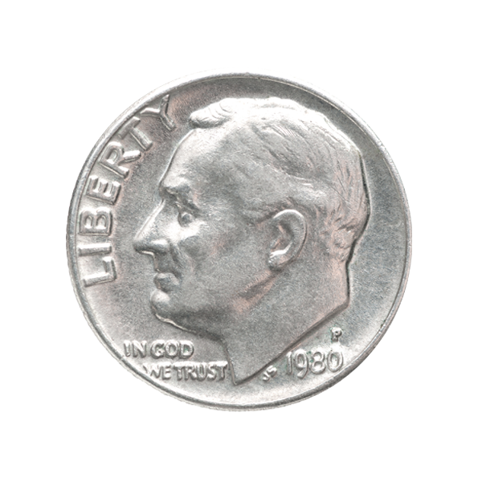

Франклин Д’ Рузвельт
Артикул: 7635202
Фиалка - символ пробуждения природы.
На монете изображена фиалка, выполненная в цвете, c использованием техники перегородчатой эмали, по верхнему канту надпись: FROWERS OF THE WORLD, THE PANSY. В нижней части надпись — год чеканки 2009. Монета укомплектована подарочным демонстрационным футляром.
Цена: 3 680 ₽
| Год | 2009 |
| Номинал на монете, ед. нац. валюты | 5 Новозеландский доллар |
| Страна-эмитент | Острова Кука |
| Качество чеканки | PR |
| Металл | Серебро |
| Масса хим.драгоценного металла в монете | 25 г. |